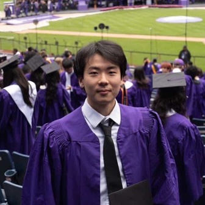

I'm David, a product designer who builds AI and spatial experiences.
Based in New York City NYC
Selected work
About
I am a product designer who works at the edges of emerging technology, using tools such as AI and augmented reality to prototype speculative concepts and surface stories that often go unnoticed. My latest interest is affective computing, exploring how human emotion can be interpreted and translated into interactive experiences and wearable technology.
I am always glad to connect with people working on similar questions. Feel free to email me if you would like to grab a coffee.
Figma
Python
HTML
CSS
Adobe Suite
AI (Claude, Gemini, Flora)
Autodesk Maya
Blender
Fun
Travel & Photography
Shooting and editing, sometimes.
Cooking
Walking through Trader Joe's aisles for new recipes and ingredients.
NYC Park Enthusiast
Immersing in parks and nature, and meditating.